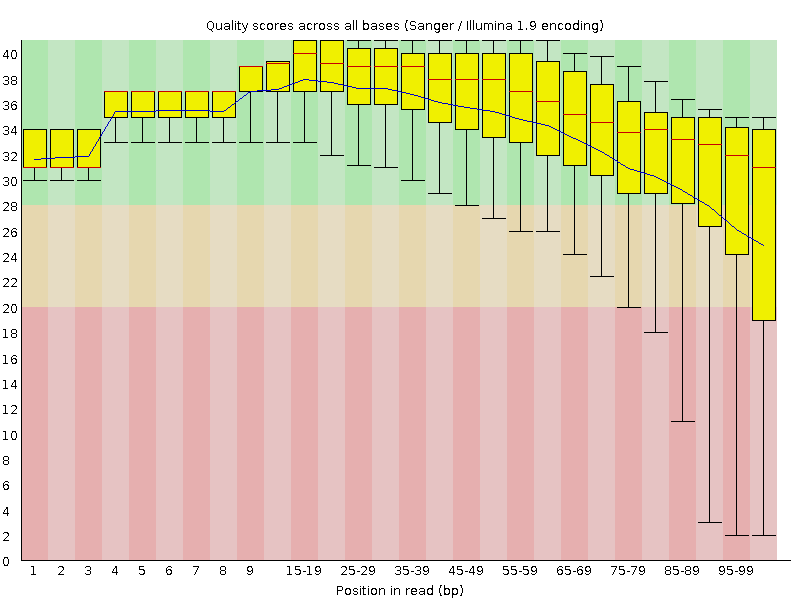
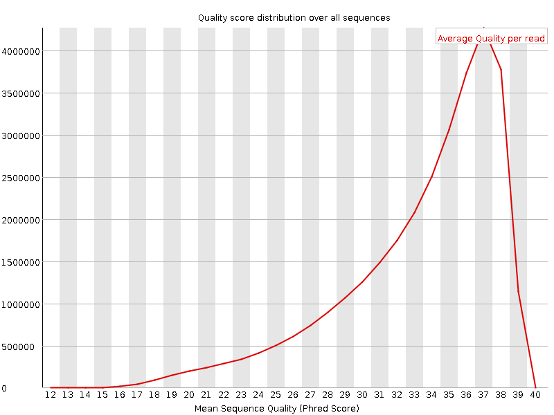
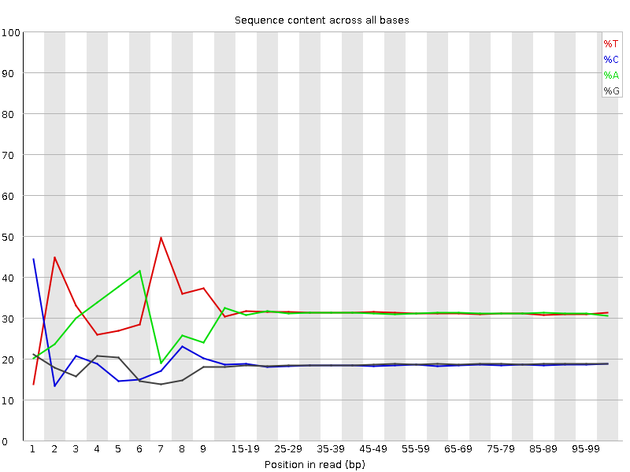
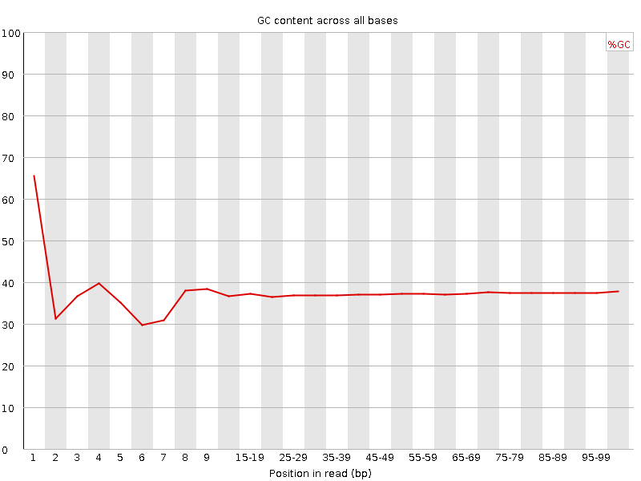
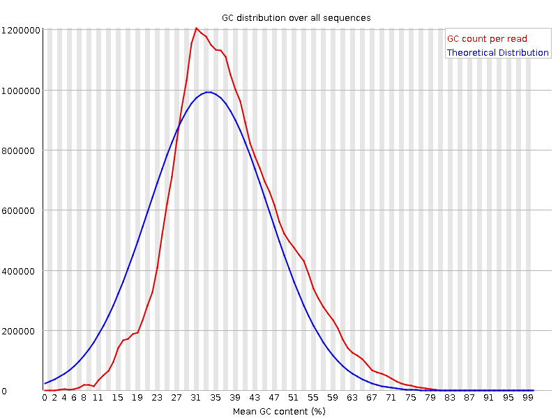
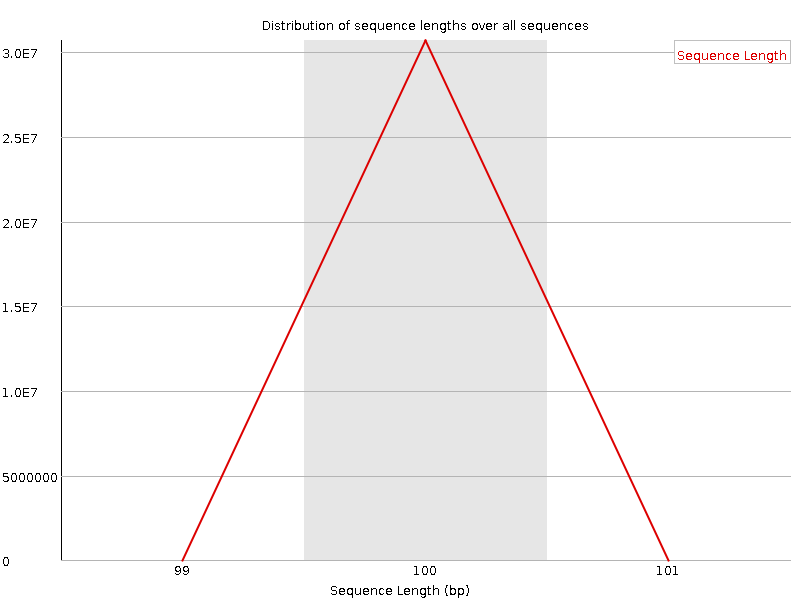
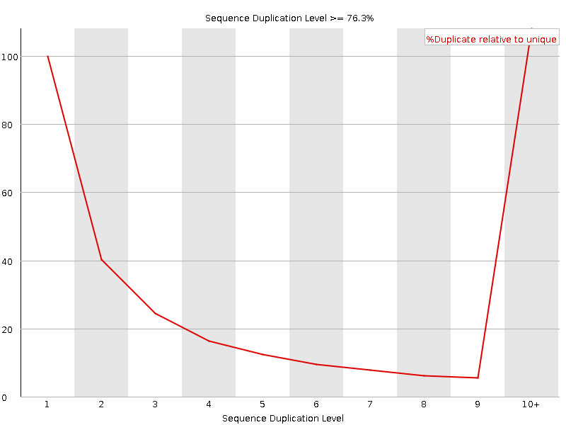
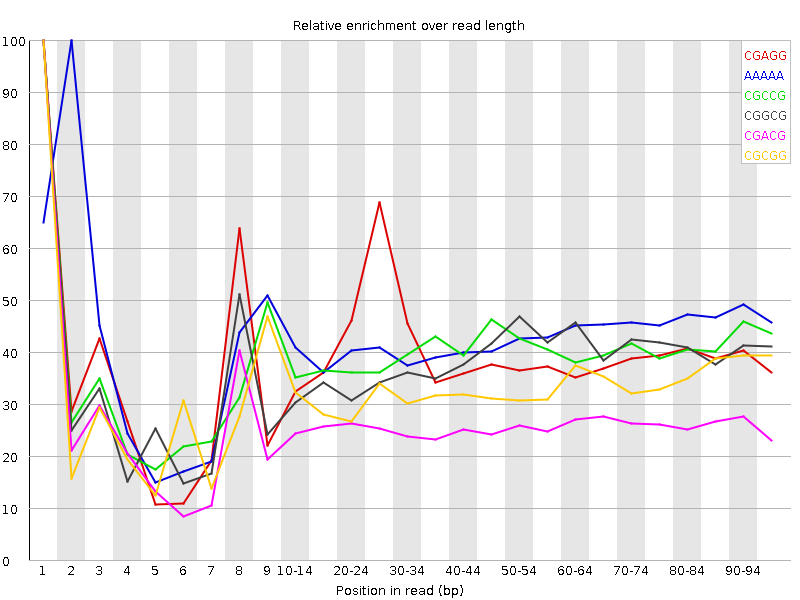

![[OK]](Icons/tick.png) Basic Statistics
Basic Statistics
| Measure | Value |
|---|---|
| Filename | c1_1.fq |
| File type | Conventional base calls |
| Encoding | Sanger / Illumina 1.9 |
| Total Sequences | 30689062 |
| Filtered Sequences | 0 |
| Sequence length | 100 |
| %GC | 37 |
Per base sequence quality

Per sequence quality scores

![[FAIL]](Icons/error.png) Per base sequence content
Per base sequence content

Per base GC content

![[WARN]](Icons/warning.png) Per sequence GC content
Per sequence GC content

Per base N content

Sequence Length Distribution

Sequence Duplication Levels

Overrepresented sequences
| Sequence | Count | Percentage | Possible Source |
|---|---|---|---|
| CTAATTTTCATCTTAATTCAACATCGAGGTCGCAAACATCTTTATCTATA | 79681 | 0.25963973744130725 | No Hit |
| CTTTCGTACAATTAATTAATATTTTATTATAGATAGAAACCAATCTGACT | 58194 | 0.18962456395702154 | No Hit |
Kmer Content

| Sequence | Count | Obs/Exp Overall | Obs/Exp Max | Max Obs/Exp Position |
|---|---|---|---|---|
| CGAGG | 2558780 | 2.299149 | 5.78735 | 1 |
| AAAAA | 19376000 | 2.256622 | 5.2724543 | 2 |
| CGCCG | 1509275 | 2.219618 | 5.572939 | 1 |
| CGGCG | 1403225 | 2.085106 | 5.431089 | 1 |
| CGACG | 2299890 | 2.0452683 | 7.8619723 | 1 |
| CGCGG | 1318400 | 1.9590613 | 5.91983 | 1 |
| CGCGA | 1931305 | 1.7174895 | 5.905446 | 1 |
| CTCGA | 3209405 | 1.6892396 | 9.256682 | 1 |
| CGCGC | 1134995 | 1.6691825 | 5.2615266 | 1 |
| CGATC | 3076635 | 1.6193572 | 5.076213 | 4 |
| ATCGA | 4894405 | 1.5577579 | 5.1079974 | 6 |
| CTGGA | 2910640 | 1.5479115 | 7.215065 | 1 |
| CCGGC | 1048605 | 1.542133 | 5.052506 | 1 |
| CGAGA | 2860040 | 1.5379728 | 5.468514 | 1 |
| CGCCA | 1743460 | 1.5344908 | 5.106395 | 1 |
| CAAAA | 7765740 | 1.4956992 | 5.019547 | 1 |
| CTTTC | 4767940 | 1.4689331 | 7.011771 | 1 |
| CGAAG | 2725780 | 1.4657751 | 5.2480073 | 1 |
| CTCCA | 2805530 | 1.4614729 | 6.628655 | 1 |
| CTTTT | 7905400 | 1.4564966 | 6.4989257 | 1 |
| CTTCG | 2789640 | 1.452098 | 6.3497157 | 1 |
| CTCGC | 1664335 | 1.4486856 | 6.667083 | 1 |
| CTCGG | 1623475 | 1.4278084 | 8.265498 | 1 |
| CTCGT | 2705600 | 1.4083525 | 7.5421777 | 1 |
| CTGGC | 1585940 | 1.3947971 | 5.8478827 | 1 |
| TCATC | 4420480 | 1.3770814 | 5.1598096 | 8 |
| CTTCA | 4171545 | 1.2995324 | 5.2715464 | 1 |
| CGAAA | 3971210 | 1.2780322 | 5.495158 | 1 |
| CTTGG | 2364015 | 1.2433373 | 6.7121964 | 1 |
| CTTTG | 3798085 | 1.1822976 | 5.793844 | 1 |
| CTTGA | 3592075 | 1.1306456 | 5.522667 | 1 |